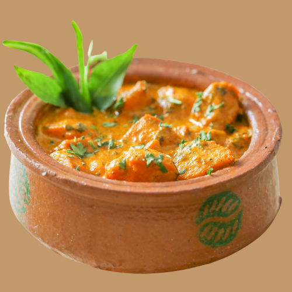
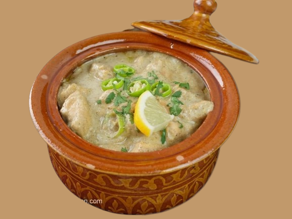
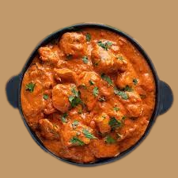
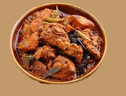

HANDI
Handi is a traditional Indian dish that delights the senses
with its aromatic flavors and vibrant colors. This culinary masterpiece is a
fragrant blend of spices, tender meat or vegetables, and rich gravy.
The dish is typically slow-cooked in a handi, a traditional earthenware pot,
which imparts a unique earthy taste to the food. Handi is a true representation
of the rich culinary heritage of India, offering a delightful
combination of flavors and textures that leave a lasting impression on anyone
fortunate enough to savor its delectable taste.
- 
CHICKEN HANDI
Serves 2 OR 3 --- A mild buttery curry cooked in clay Pot
full of creamy flavored chicken cubes.
Rs.1199
- 
CHICKEN RESHMI HANDI
Serves 2 OR 3 --- A full on creamy curry cooked in clay pot
full of julienne cut chicken and cream and topped with cheese.
Rs.1995
- 
CHICKEN MAKHNI HANDI
Serves 2 OR 3 --- A creamy curry cooked in clay pot
full of buttery flavored chicken cubes with a tarka of butter.
Rs.1399
- 
CHICKEN BBQ HANDI
Serves 2 OR 3 --- A mild buttery curry cooked in clay pot
full of tandoori flavored chicken cubes.
Rs.1395
OTHER ITEMS:
GET UPTO 25%OFF ON EXCLUSIVE DEALS
STARTER
KARAHI
BURGERS
BAVERAGES
CONTACT US